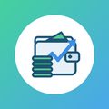

SpendaraPrivacy Policy
Effective date: 22 October 2026 · Developer: Deshan Sithumika · Contact: deshansithumika12@gmail.com
Summary
Spendara (package lk.deshan.expensestracker) works offline. Your data is stored only on your phone. There is no account, no server of ours and no advertising, and we have added no analytics or tracking. We do not collect, sell or share your personal data. The app includes Google software for receipt scanning and Google Drive sign-in, which may send limited technical data to Google (see "Google services in the app").
Data stored on your device
Transactions, accounts, categories, budgets, group expenses, money you lent or borrowed, the names of group members and people you enter, receipt photos you attach, and your settings. This data stays in the app's private storage. Android's cloud backup of the app's data is turned off.
Expense detection from notifications (optional, Android, off by default)
If you turn this feature on and grant notification access, the app reads the title and text of notifications that contain a number, only while the feature is on, to spot possible payments and money received. The text is processed on your phone and is never stored, logged or sent anywhere. Verification codes (OTPs) are ignored. For a possible payment the app keeps the amount, currency, merchant, time and the name of the app that showed the notification, so you can review it. Reviewed items are deleted after 30 days. Nothing is added to your records until you tap Add (on the notification or in the app) or save the form, and a one-tap add can be undone. You can switch the feature off in the app, or revoke access in Android Settings, at any time.
Backups
Backups are created only when you ask, or on a schedule you choose. They are encrypted on your phone (AES-256-GCM, with a key derived from your passphrase using Argon2id) before they are saved. We cannot read them, and we cannot recover a forgotten passphrase.
Google Drive (optional)
If you connect Google Drive, the app signs in with your Google account and requests only the drive.file permission: it can see and manage only the files it creates. It uploads your encrypted backups to a folder named "Expenses Tracker Backups" in your own Drive, lists and downloads them when you restore, and deletes them when you ask. It does not read any other files in your Drive. Sign-in is handled by Google; the app does not see or store your password. You can disconnect in the app or remove access at myaccount.google.com/permissions.
Spendara's use and transfer to any other app of information received from Google APIs will adhere to the Google API Services User Data Policy, including the Limited Use requirements. Data from Google APIs is used only to store and restore your own backups, is not transferred to anyone, and is not used for advertising.
Google services in the app
Receipt scanning uses Google ML Kit text recognition. It reads the text of the receipt photo on your phone; the photo and its text are not sent to Google or to us. Google Drive sign-in uses Google Play services. Like other apps that use these Google components, they may send limited technical and diagnostic data to Google, such as the component version, device and operating system details, performance and error information, so that Google can keep them working. This data does not include your transactions, receipts or backups. Google handles it under the Google Privacy Policy.
Permissions
- Notifications: reminders, budget alerts and possible-expense prompts. On a locked phone their content is hidden.
- Run at startup: to keep scheduled reminders after a restart.
- Internet: used for Google Drive backups (only if you connect Drive) and by the Google components described above. The app never sends your records anywhere else.
- Camera and photos: only when you scan or attach a receipt.
- Notification access: only if you turn on expense detection (see above).
Deleting your data
In the app, Settings → Privacy & about → delete local data, or uninstall the app. Backups you saved stay where you saved them until you delete them; Drive backups can be deleted in the app or in Google Drive.
Children
The app is not directed at children under 13 and does not knowingly collect data from them.
Changes
If this policy changes, this page and its effective date will be updated.
Contact
Made by DevoArc